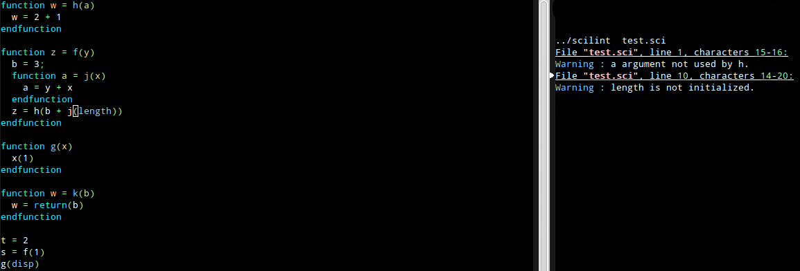

Scilint
The Scilab source analyzer
Scilint is a tool to analyze Scilab code, developed within the Richelieu project.
Download
Current version: 0.2 (Nov 12, 2013)

Scilint checks Scilab code files to find possible problems.
Documentation
Errors detected by Scilint
Scilint displays warnings with their location in the source files.
A complete list of implemented warnings is available from the
Warnings Documentation Page.
Installation
In order to use this version of Scilint, you need at least OCaml 4.00.
On Linux or OSX, we recommend the use of the OPAM package manager:
opam switch 4.00.1
Once you have OCaml 4.00.1 installed :
make
Further information will come on how to install Scilint on Microsoft Windows.
Usage
To analyze your Scilab source code, call Scilint with:
./scilint file.sci
Scilint will parse the file and then analyze it looking for some
useful information to give. Those information will be printed
with location information, so you can easily find your way to the
right code.
Resources
Scilint displays warnings with their location in the source files. A complete list of implemented warnings is available from the Warnings Documentation Page.
In order to use this version of Scilint, you need at least OCaml 4.00.
On Linux or OSX, we recommend the use of the OPAM package manager:
opam switch 4.00.1
Once you have OCaml 4.00.1 installed :
make
Further information will come on how to install Scilint on Microsoft Windows.
To analyze your Scilab source code, call Scilint with:
./scilint file.sciScilint will parse the file and then analyze it looking for some useful information to give. Those information will be printed with location information, so you can easily find your way to the right code.
| Scilint on GitHub | Git Repository of Scilint on GitHub |
| Scilint Issues | Scilint Bug Tracker |
| Scilint Releases | Scilint Source Archives |
| OPAM | To install OCaml |